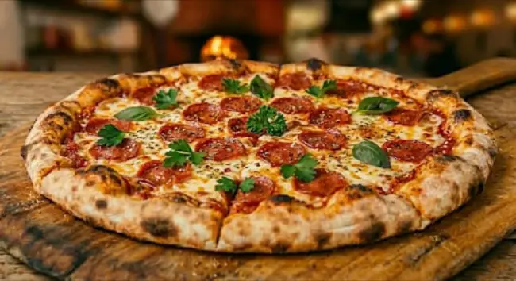

🍕Pizza Pepperoni
Un clásico irresistible con un toque de carácter. Sobre nuestra masa artesanal extendemos una base de salsa de tomate e intensa mozzarella derretida, cubierta con generosas rodajas de pepperoni curado ligeramente picante y crujiente. Hojas frescas de albahaca y perejil completan esta tentación horneada a la perfección.